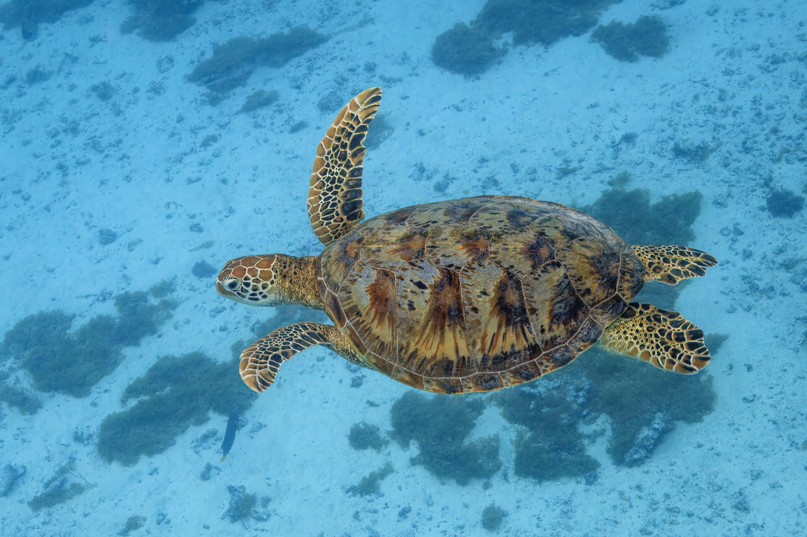
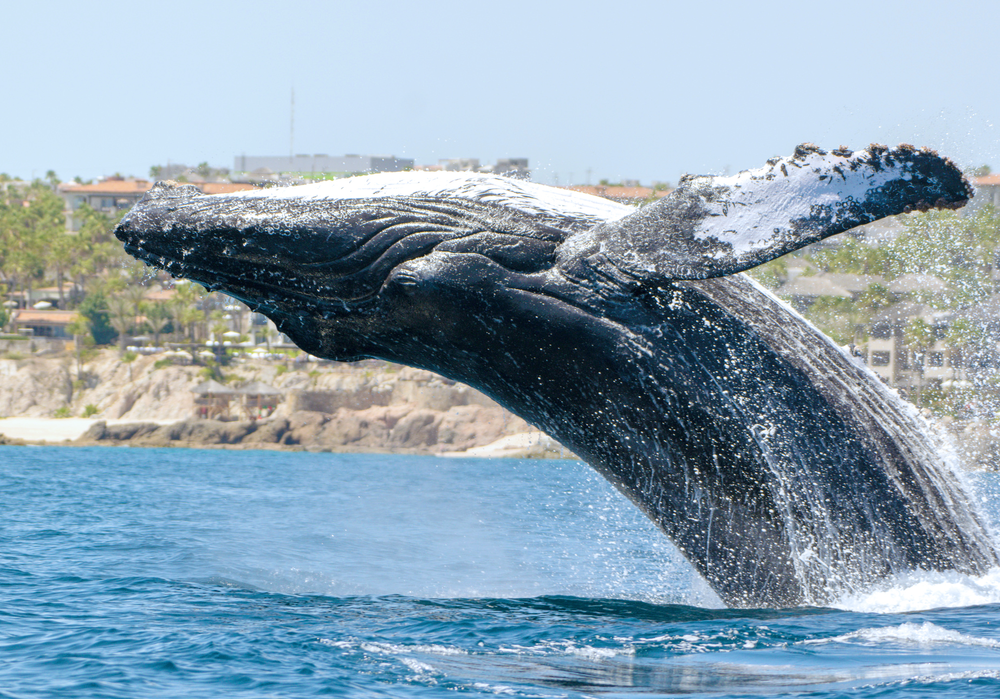
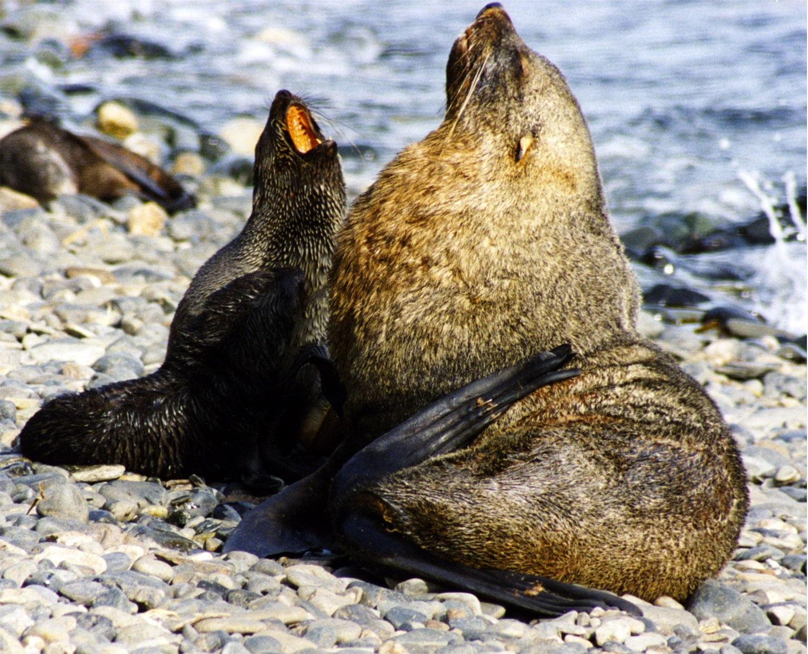
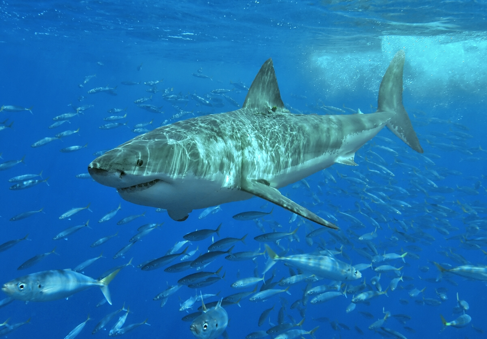
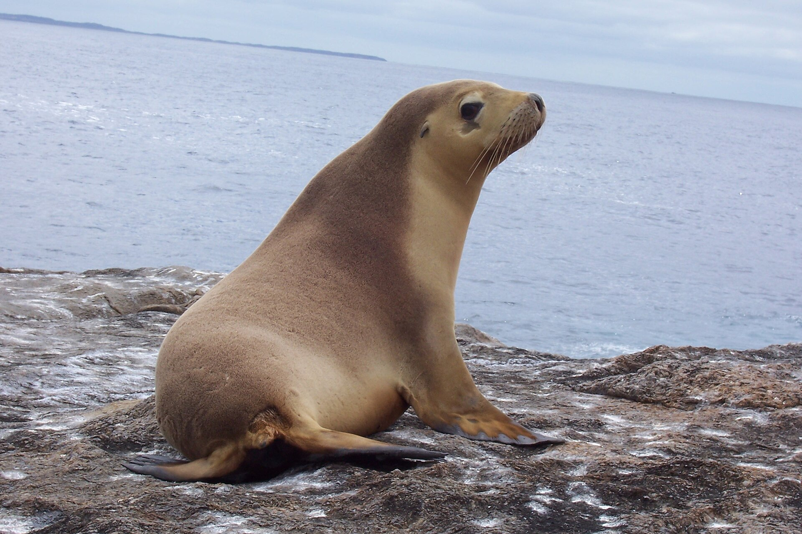
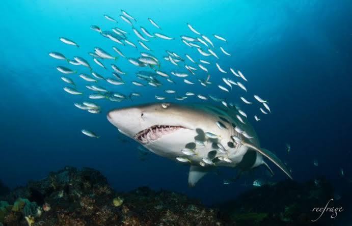
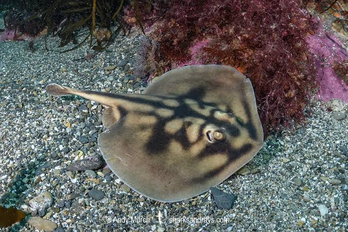

1 Protected Places
Australia protects its ocean through a layered system of marine parks. This chapter looks at where the Commonwealth-managed parks are, how strictly each zone protects the waters inside it, and how the Great Barrier Reef Marine Park, which is managed separately, is zoned.

Seagrass habitats surrounding the Cocos (Keeling) Islands are essential for the resident green sea turtle population

Norfolk Island is a biologically important area for humpback whales, minke whales, and Blainville's beaked whales

Heard Island is an important breeding ground for Antarctic fur seals and southern elephant seals

Great White Sharks forage amongst fish habitats in Freycinet Marine Park off the eastern Tasmanian coast
60 total distinct Marine Park areas exist across Australia and its territories. The Parks are categorised into eight distinct Networks, which enable efficient management delegation by geographic area. Each of the 60 Parks is given a name and a Zone status. Not shown here are non-Commonwealth-managed Parks, including the Great Barrier Reef Marine Park (Federal/QLD State Govt. managed) and other state-managed coastal waters.
Shown on this map are the marine parks solely overseen by the Australian Federal Government. These Commonwealth-managed zones can start from 3 nautical miles from the mainland coastline and extend out to the boundaries of the Exclusive Economic Zone (EEZ), the area in which Australia exercises sole regulation over all maritime activities conducted. State and Local Governments are responsible for managing waters up to three nautical miles from the coastline. In addition to the fact that many areas within Australia's EEZ are simply not designated marine parks, this creates the 'blank' spaces you can see on the map.
| Zone (IUCN category) | Description |
|---|---|
| Sanctuary ZoneIUCN Ia | Strict nature reserve. Extractive uses such as fishing and mining are not allowed, and human use is tightly limited, mainly to research. |
| National Park ZoneIUCN II | Protects whole ecosystems. Fishing and mining are not allowed, but low-impact visitor activities such as diving and boating are generally permitted. |
| Recreational Use ZoneIUCN IV | Managed to protect habitats and species while allowing recreational fishing. Commercial fishing is generally not allowed. |
| Habitat Protection ZoneIUCN IV | Managed to protect seafloor habitats. Activities that damage the seabed are restricted, while some lower-impact fishing is permitted. |
| Special Purpose ZoneIUCN VI | Allows sustainable use, with extra management for a specific purpose, such as limits on particular fishing methods. |
| Multiple Use ZoneIUCN VI | Sustainable use of marine resources, including commercial fishing, alongside conservation of the park's values. |
Strictest zones (IUCN Ia and II), the ones used to colour the circles on the map.
2 Great Barrier Reef
The Great Barrier Reef is the world's largest coral reef system, and one of Australia's most well-known marine landmarks. The Great Barrier Reef's immense beauty, and host of rich marine flora and fauna, makes it a popular destination for snorkelling, diving, and marine tourism. Its ecological diversity and complexity also makes it an important site for scientific research. It's for these reasons that the Great Barrier Reef was declared a marine park in 1975, and a UNESCO World Heritage Site in 1981.
| Zone | Description |
|---|---|
| PreservationIUCN Ia | No public access without a permit. No fishing. Reserved for research. |
| Scientific ResearchIUCN Ia | Research use by permit only. No fishing; some areas closed to the public. |
| Marine National ParkIUCN II | No fishing or collecting. Boating, diving and snorkelling allowed. |
| BufferIUCN IV | Allows limited fishing, such as trolling for tuna and mackerel. |
| Conservation ParkIUCN IV | Limited fishing (one line, one hook). No netting or trawling. |
| Habitat ProtectionIUCN VI | Protects seabed habitats. No trawling; some line fishing and netting allowed. |
| General UseIUCN VI | Open to most reasonable uses, including commercial fishing and trawling. |
| Commonwealth IslandsIUCN varies | Commonwealth-owned islands within the Park. Land zones, not marine zones. |
3 Marine Life
Australia's waters are home to over 33,000 known marine species. Of these, over 1,500 make their home solely in the Great Barrier Reef. The following section contains detailed data on five common Australian marine species of interest: The Humpack Whale, Green Turtle, White Shark, Eastern Blue Groper, and the Giant Australian Cuttlefish.
4 Endangered Species
The Environmental Protection and Biodiversity Conservation (EPBC) Act was legislated in 1999 with the intention of implementing protective measures and frameworks for the protection and conservation of Australia's flora and fauna. Australian marine life faces a unique set of threats to their habitats, populations and survival. This includes damaging commercial fishing activities such as seafloor trawling, habitat loss and degradation, climate change and ocean pollution.

Australian sea lions are listed as Endangered. They can become engtangled in commercial fishing nets and marine debris.

Historical hunting and accidental capture in commercial fishing nets have degraded the Grey nurse shark population.

Coastal stingarees are an Endangered species found exclusively in South Australia's Great Australian Bight.
As part of this framework, species are assigned an endangerment rating based on their present threat level. This map summarises the count of threatened species according to their native state/territory jurisdiction.
A very high proportion of threatened species are found in Western Australia, followed closely by Queensland and New South Wales.
Data & credits
- Atlas of Living Australia (2026) Occurrence records for Eastern Blue Groper, Humpback Whale, Giant Cuttlefish, White Shark, Green Turtle [dataset]. Available at: https://doi.org/10.15468/jayxmn (Accessed: 17 Oct 2026).
- Australian Bureau of Statistics (2021) States and Territories Digital Boundary Lines[dataset]. Available at: https://www.abs.gov.au/statistics/standards/australian-statistical-geography-standard-asgs/edition-3-july-2021-june-2026/access-and-downloads/digital-boundary-files (Accessed: 14 Oct 2026).
- Australian Institute of Marine Science (2015) AIMS Long-term Monitoring Program: Crown-of-thorns starfish (Acanthaster planci) and benthos Manta Tow Data (Great Barrier Reef) [dataset]. Available at: https://doi.org/10.25845/5c09b0abf315a (Accessed: 14 Oct 2026).
- Cruzado Cortés, J. (n.d.) Humpback whale [photograph]. Available at: https://commons.wikimedia.org/w/index.php?curid=197915789 (Accessed: 25 Oct 2026). Licensed under CC BY 4.0. Original: https://www.inaturalist.org/photos/344677883.
- Department of Climate Change, Energy, the Environment and Water (n.d.) Australian Marine Parks [dataset]. data.gov.au. Available at: https://australianmarineparks.gov.au/maps/ (Accessed: 10 Oct 2026).
- Department of Climate Change, Energy, the Environment and Water (n.d.) Our role [EPBC Act]. Available at: https://www.dcceew.gov.au/environment/epbc/our-role (Accessed: 13 Oct 2026).
- Department of Climate Change, Energy, the Environment and Water (n.d.) Threatened species. Available at: https://www.dcceew.gov.au/environment/biodiversity/threatened/species (Accessed: 14 Oct 2026).
- Department of Climate Change, Energy, the Environment and Water (2026) Species Profile and Threats Database (SPRAT) report [dataset]. (Accessed: 12 October 2026).
- Goss, T. (n.d.) Great white shark [photograph]. Available at: https://commons.wikimedia.org/w/index.php?curid=1561215 (Accessed: 25 Oct 2026). Licensed under CC BY 2.5.
- Great Barrier Reef Marine Park Authority 2025 Great Barrier Reef Marine Park zoning [dataset]. Available at: https://www.arcgis.com/home/item.html?id=2638411eb4f048d5a164a6cf14781d7b#overview (Accessed: 20 Oct 2026).
- Hunt, B.M. (n.d.) Australian Sea location [photograph]. Available at: https://commons.wikimedia.org/w/index.php?curid=227477 (Accessed: 25 Oct 2026). Licensed under CC BY-SA 3.0. Uploaded by Wikipedia user Bmh ca.
- Inaglory, B. (n.d.) Antarctic fur seals [photograph]. Available at: https://commons.wikimedia.org/w/index.php?curid=4373747 (Accessed: 22 Oct 2026). Licensed under CC BY-SA 3.0.
- Integrated Marine Observing System 2019 National Reef Monitoring Network: reef fish surveys [dataset]. Reef Life Survey and partners. (Accessed: 15 Oct 2026).
- Ling, R. (n.d.) Australian giant cuttlefish [photograph]. Available at: https://commons.wikimedia.org/w/index.php?curid=3153812 (Accessed: 22 Oct 2026). Licensed under CC BY-SA 2.0.
- Sharp, C.J. (n.d.) Green sea turtle [photograph]. Sharp Photography. Available at: https://commons.wikimedia.org/w/index.php?curid=155815572 (Accessed: 24 Oct 2026). Licensed under CC BY-SA 4.0.
Built with Vega-Lite and vega-embed. Saffron Cookesley | FIT3179 | 2026.